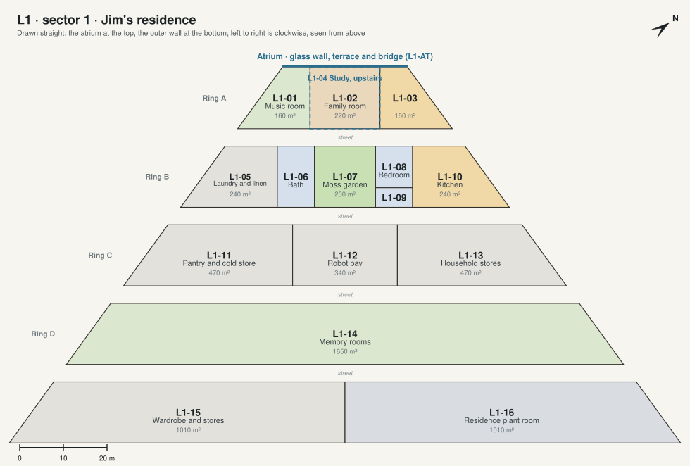

L1 · sector 1 · Jim's residence

| Code | Room | What it is for | Also | Size | Two of a kind |
|---|---|---|---|---|---|
| L1-01 | Music room ◉ 360° | Jim's piano, played every day, and his records on a long console with a turntable. | Listening to music in the evening; a quiet room for a guest who plays. | 160 m² | C-11 Recital room |
| L1-02 | Family room ◉ 360° | Jim's evening living room: the long fire of lit mist, a sofa, books, the screen. | Films and video letters from home on the screen; chess by the glass. | 220 m² | C-10 Great salon |
| L1-03 | Dining room and bar ◉ 360° | Everyday meals, a table for eight; the bar at the back of the room. | Drinks after dinner; small dinners with guests. | 160 m² | C-17 Dining hall |
| L1-04 | Study | Jim's evening desk, on the upper storey over the family room: letters and video letters home, his accounts, Arcadia's console. | A quiet room to read late. | 220 m² · upper floor | C-23 Study |
| L1-05 | Laundry and linen | Washing, ironing and the linen for the suite, next to the bath. | Robots' storeroom for the suite. | 240 m² | |
| L1-06 | Bath ◉ 360° | The master bath: a stone tub, a shower, two basins, a glass wall onto the moss garden. | A steam shower for the evenings. | 120 m² | |
| L1-07 | Moss garden ◉ 360° | A garden open to the lit roof, 8 m tall, between the bedroom and the bath: moss, a pond, stones, a maple. | Where Jim sits before sleep. | 200 m² | |
| L1-08 | Bedroom ◉ 360° | Jim's bedroom for the nights, under 16 m of soil: the bed faces a glass wall onto the moss garden. | Reading in bed; a sitting corner. | 81 m² | C-07 Bedroom up |
| L1-09 | Dressing room | Clothes, shoes, the suits for going outside, behind the bedroom. | 38 m² | ||
| L1-10 | Kitchen | The everyday kitchen, across the street from the dining room. Robots cook; Jim can too. | Breakfast at the counter. | 240 m² | C-18 Chef's kitchen |
| L1-11 | Pantry and cold store | Food from the garden level, kept for the kitchen. | 470 m² | ||
| L1-12 | Robot bay | Where the robots that cook, clean and carry charge and are serviced. | 340 m² | ||
| L1-13 | Household stores | China, glass, furniture and decorations not in use. | 470 m² | ||
| L1-14 | Memory rooms | Jim's keepsakes from Earth: family photographs, letters and the things he brought from home, in a suite of quiet rooms. | Where he records his memoirs; where visiting family find the family's history. | 1650 m² | |
| L1-15 | Wardrobe and stores | Clothes and things not in daily use. | 1010 m² | ||
| L1-16 | Residence plant room | The air, heat and water for the residence, with its own back-up. | 1010 m² |